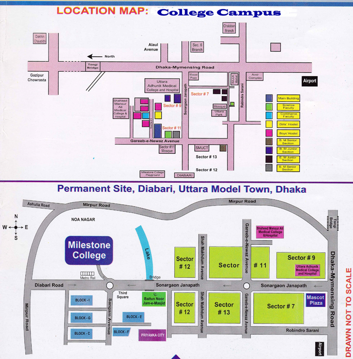

College history
We, a number of educationists, had been discussing for a long time about the establishment of an educational institution of international standard. Among us, some have worked and are still working in universities and the others have worked at renowned colleges and cadet colleges as professors & principals. In the light of our long experience, we have perceived that our children, despite securing good results and being meritorious, cannot attain the expected results because of excessive coyness. They are introvert; they know but cannot express their thoughts. Moreover, having completed their education in Bangla Medium, most of these students remain weak in writing and speaking in English. As a result, when they go abroad for higher studies, they fall in deep water. Even in our own country, they fail to get a good job in the multinational companies.
On the other hand, our students attending the British Education curriculum, i.e. the students of ‘O’ level & ‘A’ level face a great hardship while competing for admission in the BUET, Public Universities, Medical Colleges, etc. These students have segregated themselves from the age-old traditions & customs in respect of dress, way of life, food habits and manners. This is mainly due to the British curriculum followed at ‘O’ & ‘A’ level Exams. Where our students are taught British culture, heritage & tradition. They leran British history, geography, economy, way of life etc. but not those of Bangladesh.
Against this backdrop of confusion and disorder in the education system of the country, we ventured to establish an ideal educational institution in the year 2001 named Milestone College at Gareeb-e-Newaz Avenue, Sector 11 of Uttara Model Town, Uttara, Dhaka 1230. The building where we started is owned by Milestone family and now it is used as the Headquarters of Milestone.
Govt. Approval:
Milestone College is approved by the Ministry of Education, Government of People’s Republic of Bangladesh, vide their letter no. sha 9168 (part) 313, dated, 18th May 2002 and Board of Intermediate and Secondary Education, Dhaka, Letter no. 1079 dated 24/07/2002. Our College Code Number is 1056 & EIIN: 108572, Milestone Preparatory KG School is also approved by the Government, School Code Number is 1098.
Infrastructure
Location Map of Milestone College

Permanent campus(Diabari)
Our permanent campus is located in Diabari just adjacent to Uttara Metrorail depot.
Main Building (Administration):
Main Building houses the office of Principal, Founder & Adviser of Milestone College, VP (Admin & Academics) and Director Admin. Besides, the Main Building accommodates the classes of class XII of Science Group (Boys).
Academic Building:
Building 27:
Building 27 is allotted for class XI and XII (girls) of Science Group.
Building 22:
Building 22 (known as Commerce Faculty) is allotted for class XI & XII (girls) of Science & Business Studies Group.
Building 30:
Building 30 is allotted for male students of class XI & XII of Business Studies Group and XI Science Group.
Permanent Campus (Diabari):
Students of the classes IX, X, XI & XII of English Version attend their classes in this Permanent Campus. Classes of IX, X and XI & XII (Science & Humanities) – Bangla Version attended their classes.
Canteen:
Without good food we cannot expect good health and a sound nation ultimately. Considering health issues of the students, we have setup canteen in each academic building. Healthy and quality foods with lots of variety are available in these canteens. Therefore, students need not go outside and consume roadside unhygienic foods.
Car parking:
Keeping car parking hassles in mind, we have a spacious car parking lot in our permanent campus. Besides, there is enormous area in front of each building for parking.
Auditorium
We have a huge auditorium fully furnished with modern amenities. Sitting at the auditorium students can hear and watch various cultural programmes, debate competition and many more scheduled and unscheduled seminars, discussion programmes and also can attend Principals’ assemblies. Besides, each & every building has space facility in the ground floor for holding weekly assembly.
Guardians’ waiting room:
The college has good sitting arrangements for the guardians in each academic building. Here the guardians can stay comfortably and pick their wards safely.
BNCC:
The Bangladesh National Cadet Corps (BNCC) is a Tri services organization of Bangladesh. Serving in defense organization is a core dream of many enthusiastic youths. Milestone College BNCC gives its cadets enormous opportunities to fulfill this dream by providing them with necessary trainings and knowledge. Uncountable number of our cadets got chance in Bangladesh Army, Navy and Air Force.
Playground:
Milestone College has the biggest playground beset with wide open space around it. Annual sports competitions are held in this attractive playground. Besides, Annual Freshers’ Reception and Cultural Programmes are also held here in a befitting and festive manner.
CCTV Camera surveillance:
All the academic buildings of Milestone College are monitored by CCTV camera to deter potential security threats. Every classroom of each academic building is under CCTV camera surveillance. This initiative ensures not only security of your beloved learners but also increases efficiency of all concerned bodies.
Hostel facilities:
We take full care of each and every student of the hostel, their proper grooming-up, physical training for the students, religious & moral education etc. we provide special coaching for the academically poor students. 1500 students are presently staying in the hostel. We have Hostel Supers and under them there are 55 Assistant Hostel supers. There is an exclusive Girls’ hostel under the supervision of a Lady Hostel Super and 15 Assistant Hostel Supers. The Hostel Administration is overseen by a Lt. Col (retd) of Bangladesh Army.
College Transport:
We offer transport facilities for day-shift students. Currently 550 students are using college transports. It plies from Uttara to Gazipur via Tongi and Uttara to Mohakhali, Banani, Khilkhet and Gulshan.
Internet Facility:
There is Wi-Fi connection to facilitate internet access to the students. Computer Lab Assistant monitor and assist the use of internet in the computer laboratory. Students are allowed to surf on the net for learning purpose only.